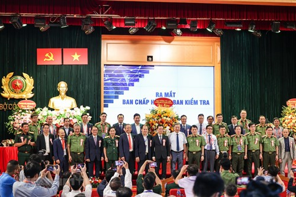

Baodautu.vn - Trước đó, tháng 5/2023, Bộ Nội vụ đã ban hành Quyết định số 340/QĐ-BNV về việc thành lập Hiệp hội An ninh mạng Quốc gia. Hiệp hội An ninh mạng Quốc gia là tổ chức xã hội – nghề nghiệp của công dân và tổ chức Việt Nam hoạt động trong lĩnh vực an ninh mạng, tự nguyện thành lập, nhằm bảo vệ quyền và lợi ích hợp pháp của hội viên, hỗ trợ nhau hoạt động có hiệu quả; đảm bảo an ninh mạng theo định hướng chiến lược về an ninh mạng của Đảng, Nhà nước; góp phần bảo vệ Tổ quốc và thúc đẩy phát triển kinh tế - xã hội của đất nước.
Đại hội Đại biểu toàn quốc lần thứ nhất có sự tham dự của gần 200 đại biểu là hội viên của Hiệp hội An ninh mạng Quốc gia từ các cơ quan, tổ chức, doanh nghiệp, chuyên gia uy tín trong lĩnh vực an ninh mạng.
Đại hội đã thông qua Chương trình, phương hướng hoạt động, Điều lệ và Đề án tổ chức nhân sự Đại hội nhiệm kỳ I (2023-2028). Đại hội cũng đã bầu ra Ban Chấp hành, Ban kiểm tra, Ban thường vụ của Hiệp hội An ninh mạng Quốc gia và thông qua Nghị quyết đại Đại hội lần thứ nhất.
|  |
| Đại hội có sự tham dự của gần 200 đại biểu là hội viên Hiệp hội An ninh mạng quốc gia từ các cơ quan, tổ chức, doanh nghiệp, chuyên gia, học giả uy tín trong lĩnh vực an ninh mạng. (Ảnh: Minh Sơn/Vietnam+) |
Chủ tịch Hiệp hội An ninh Mạng Quốc gia là Thượng tướng Lương Tam Quang - Ủy viên Trung ương Đảng, Thứ trưởng Bộ Công an.
Phó chủ tịch thường trực là Trung tướng Nguyễn Minh Chính, Ủy viên Đảng ủy Công an Trung ương, Cục trưởng Cục An ninh Mạng và Phòng chống tội phạm sử dụng công nghệ cao (Bộ Công an).
Các Phó chủ tịch bao gồm: Ông Đặng Hoàng An - Chủ tịch Hội đồng thành viên Tập đoàn Điện lực Việt Nam (EVN); Đại tá Tào Đức Thắng - Chủ tịch kiêm Tổng giám đốc Tập đoàn Công nghiệp-Viễn thông Quân đội (Viettel); Ông Tô Dũng Thái - Chủ tịch Hội đồng thành viên Tập đoàn Bưu chính Viễn thông Việt Nam (VNPT); PGS.TS Trương Gia Bình - Chủ tịch Hội đồng quản trị Công ty Cổ phần FPT; Ông Nguyễn Trung Chính - Chủ tịch Hội đồng quản trị, Chủ tịch Điều hành Công ty Cổ phần Tập đoàn Công nghệ CMC.
Phát biểu chỉ đạo tại sự kiện, GS.TS – Đại tướng Tô Lâm, Ủy viên Bộ Chính trị, Bộ trưởng Bộ Công an, Phó Trưởng ban thường trực Ban Chỉ đạo An toàn An ninh mạng Quốc gia cho biết: "Nhiệm vụ của Hiệp hội An ninh mạng Quốc gia hết sức nặng nề, tuy nhiên tôi tin rằng Hiệp hội sẽ đoàn kết thống nhất, chung sức đồng lòng, quyết tâm thực hiện thắng lợi nghị quyết Đại hội đại biểu toàn quốc lần thứ nhất nhiệm kỳ 2023-2028 đã đề ra và có những đóng góp tích cực, hiệu quả vào sự nghiệp nhanh, bền vững về kinh tế xã hội của đất nước, góp phần bảo vệ an ninh, lợi ích, chủ quyền quốc gia, không gian mạng, phục vụ cho cuộc sống văn minh, hạnh phúc của nhân dân".
Trước đó cuối tháng 8/2023, phiên họp thứ nhất Ban Vận động thành lập Hiệp hội An ninh mạng quốc gia đã diễn ra với việc công bố quyết định công nhận Ban Vận động thành lập Hiệp hội An ninh mạng quốc gia.
Ông Lương Tam Quang, Thứ trưởng Bộ Công an cho biết, sự ra đời của Hiệp hội An ninh mạng quốc gia nhằm quy tụ, khơi dậy, lan toả sức mạnh tiềm năng của các cơ quan, tổ chức, doanh nghiệp chuyên gia, các học giả uy tín, để xây dựng hệ sinh thái an ninh mạng kết nối công, tư hữu hiệu nhất; hội tụ chính sách công nghệ, nhân lực về an ninh mạng.
Qua đó, Hiệp hội góp phần nâng cao tiềm lực an ninh mạng quốc gia; ứng phó hiệu quả với các thách thức phi truyền thống với mục tiêu xây dựng không gian mạng an ninh, an toàn, lành mạnh và đóng góp vào sự phát triển bền vững của đất nước; nâng cao uy tín, vị thế của Việt Nam… .
Sau Đại hội, Hiệp hội sẽ nỗ lực triển khai ngay các hoạt động ý nghĩa, thiết thực, tạo ảnh hưởng và sức lan tỏa, góp phần xây dựng Hiệp hội An ninh Mạng Quốc gia với phương châm "Quy tụ - Đoàn kết - Sáng tạo - Lan tỏa".
Nguồn: Baodautu.vn